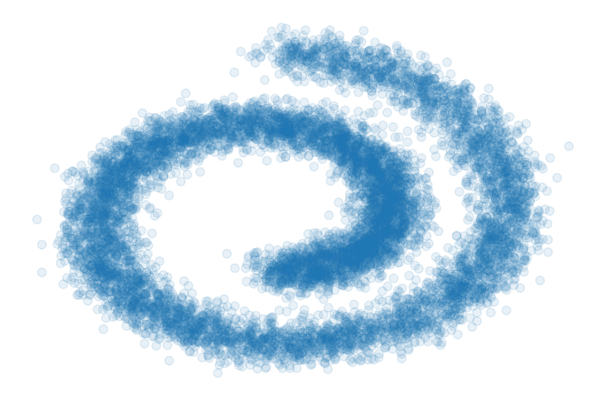

エネルギーベースモデル
深層生成モデル５
2024-03-30
A Blog Entry on Bayesian Computation by an Applied Mathematician
$$
$$
import matplotlib.pyplot as plt
import numpy as np
from sklearn.datasets import make_swiss_roll
import jax
import jax.numpy as jnp
try:
from flax import linen as nn # The Linen API
except ModuleNotFoundError:
%pip install -qq flax
from flax import linen as nn # The Linen API
from flax.training import train_state # Useful dataclass to keep train state
try:
import optax # Optimizers
except ModuleNotFoundError:
%pip install -qq optax
import optax # Optimizers
from functools import partial
from IPython.display import clear_outputdef sample_batch(size, noise=1.0):
x, _ = make_swiss_roll(size, noise=noise)
x = x[:, [0, 2]] / 10.0
return np.array(x)
# plt.figure(figsize=[16, 16])
plt.scatter(*sample_batch(10**4).T, alpha=0.1)
plt.axis("off")
plt.tight_layout()
# plt.savefig("swiss_roll.png")
class Model(nn.Module):
@nn.compact
def __call__(self, x):
x = nn.Dense(128)(x)
x = nn.softplus(x)
x = nn.Dense(128)(x)
x = nn.softplus(x)
x = nn.Dense(2)(x)
return x@jax.jit
def compute_loss(params, inputs):
# a function that computes jacobian by forward mode differentiation
jacobian = jax.jacfwd(Model().apply, argnums=-1)
# we use jax.vmap to vectorize jacobian function along batch dimension
batch_jacobian = jax.vmap(partial(jacobian, {"params": params}))(inputs) # [batch, dim, dim]
trace_jacobian = jnp.trace(batch_jacobian, axis1=1, axis2=2)
output_norm_sq = jnp.square(Model().apply({"params": params}, inputs)).sum(axis=1)
return jnp.mean(trace_jacobian + 1 / 2 * output_norm_sq)@jax.jit
def train_step(state, batch, key):
"""Train for a single step."""
loss = compute_loss(state.params, batch)
grads = jax.grad(compute_loss, argnums=0)(state.params, batch)
state = state.apply_gradients(grads=grads)
return state, loss
def create_train_state(rng, learning_rate):
"""Creates initial `TrainState`."""
net = Model()
params = net.init(rng, jnp.ones([128, 2]))["params"]
tx = optax.adam(learning_rate)
return train_state.TrainState.create(apply_fn=net.apply, params=params, tx=tx)
def train_loop(key, train_step, nsteps):
key, subkey = jax.random.split(key)
state = create_train_state(subkey, 1e-3)
del subkey # Must not be used anymore.
loss_history = []
for i in range(nsteps):
x = sample_batch(size=128)
key, subkey = jax.random.split(key)
state, loss = train_step(state, x, subkey)
loss_history.append(loss.item())
if i % 200 == 0:
clear_output(True)
plt.figure(figsize=[16, 8])
plt.subplot(1, 2, 1)
plt.title("mean loss = %.3f" % jnp.mean(jnp.array(loss_history[-32:])))
plt.scatter(jnp.arange(len(loss_history)), loss_history)
plt.grid()
plt.subplot(1, 2, 2)
xx = jnp.stack(jnp.meshgrid(jnp.linspace(-1.5, 2.0, 50), jnp.linspace(-1.5, 2.0, 50)), axis=-1).reshape(
-1, 2
)
scores = Model().apply({"params": state.params}, xx)
scores_norm = jnp.linalg.norm(scores, axis=-1, ord=2, keepdims=True)
scores_log1p = scores / (scores_norm + 1e-9) * jnp.log1p(scores_norm)
plt.quiver(*xx.T, *scores_log1p.T, width=0.002, color="green")
plt.xlim(-1.5, 2.0)
plt.ylim(-1.5, 2.0)
plt.show()
return state
state = train_loop(jax.random.PRNGKey(seed=42), train_step, 10000)
# plt.figure(figsize=[16, 16])
xx = jnp.stack(jnp.meshgrid(jnp.linspace(-1.5, 1.5, 50), jnp.linspace(-1.5, 1.5, 50)), axis=-1).reshape(-1, 2)
scores = Model().apply({"params": state.params}, xx)
scores_norm = jnp.linalg.norm(scores, axis=-1, ord=2, keepdims=True)
scores_log1p = scores / (scores_norm + 1e-9) * jnp.log1p(scores_norm)
plt.quiver(*xx.T, *scores_log1p.T, width=0.002, color="green")
plt.scatter(*sample_batch(10_000).T, alpha=0.1)
plt.axis("off")
plt.tight_layout()
# plt.savefig("score_matching_swiss_roll.png")Google の JAX (GitHub) とは，科学計算と機械学習のためのフレームワークである．
Autograd (GitHub) を用いて，Python のビルトイン関数や NumPy 関数を自動微分することができる．
今回は JAX エコシステムの一つである，深層学習のためのフレームワークである Flax，特に Linen モジュール (docs / GitHub) を用いた．
コードは (Murphy, 2023) の こちら を参考にした．
Yang Song のコードも参考．
(Song et al., 2019) のコードは このレポジトリ で公開されている．
UvA DL Tutorial も参照．